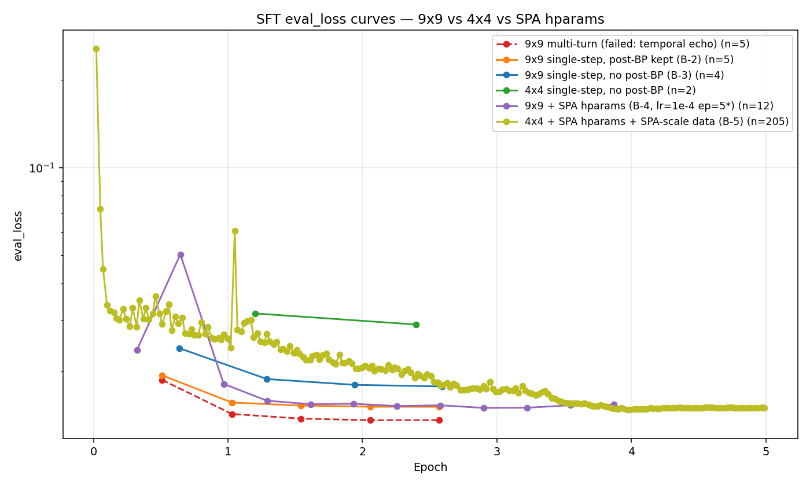

This rules out "broken recipe" as the explanation for the 9×9 collapse. The 9×9 task at the scale and capacity we have (Qwen-1.5B, ~6,000 SFT samples) is genuinely too hard without RL. The 4×4 task is within capacity.
| Run | Task | Train samples | LR | Epochs | Eff. batch | Eff. grad signal* | Eval AUC |
|---|---|---|---|---|---|---|---|
| B-2 | 9×9 | 2,482 | 1e-5 | 3 | 32 | 0.0023 | 0.468 |
| B-3 | 9×9 (no post-BP) | 2,482 | 1e-5 | 3 | 32 | 0.0023 | 0.462 |
| B-4 | 9×9 (no post-BP) | 2,482 | 1e-4 | 5 | 16 | 0.0775 | 0.455 no signal |
| B-5 | 4×4 (no post-BP) | 6,571 (SPA) | 1e-4 | 5 | 16 | 0.205 | 0.726 learned signal |
*"Effective gradient signal" ≈ epochs × updates/epoch × LR (rough proxy from HANDOFF.md §2 Finding 3).
B-5's data was generated by splitting 4×4 SPA-scale gen across both clouds: autodl1 produced part-A (2,500 trajectories, seed=42), autodl2 produced part-B (2,500 trajectories, seed=43). Combined via scripts/combine_4x4_spa_scale_parts.py. Final training set = 6,571 single-step samples after no_post_bp filter (slightly above SPA's published 6,060 target). Train/val class balance: 40% solvable / 60% breaking-point.
300 samples (100 solvable, 200 unsolvable, 100 BP).
| Metric | Value |
|---|---|
Format compliance (valid + has <solvable> + has <answer>) | 100% |
| Accuracy | 44.3% |
| Precision (T) | 24.4% |
| Recall (T) | 32.0% |
| F1 (T) | 27.7% |
Confusion matrix:
| Pred=True | Pred=False | |
|---|---|---|
| GT=True | 32 | 68 |
| GT=False | 99 | 101 |
The "Breaking Point" rows in the raw eval log are all zero because we removed <breaking_point> from the minimal format (intentional — we derive BPs post-hoc from the solvable time-series per tag-design Q&A).
The more informative eval. We do a single forward pass at the <solvable> token position and read off P(true) directly from the logits — no decoding noise.
| Class | n | mean | median | std |
|---|---|---|---|---|
| GT=true | 100 | 0.045 | 0.032 | 0.042 |
| GT=false | 200 | 0.022 | 0.001 | 0.033 |
Mean separation: +0.023 (positive — solvable states get higher P(true)). For B-2/B-3/B-4 this separation was within noise of zero.
| τ | Acc | Prec(T) | Rec(T) | Spec | F1(T) |
|---|---|---|---|---|---|
| 0.10 | 67.7% | 57.1% | 12.0% | 95.5% | 19.8 |
| 0.20 | 66.7% | 0.0% | 0.0% | 100.0% | 0.0 |
| ≥0.30 | 66.7% | 0.0% | 0.0% | 100.0% | 0.0 |
At τ=0.10 the classifier catches 12 of 100 solvable states with 57% precision while keeping 95.5% specificity on unsolvable states. For τ ≥ 0.20, no states cross the threshold (all P(true) values < 0.2 — the model is uncalibrated, biased toward False).

Key observations:
<solvable>true|false</solvable> decision is a single token in a ~200-token response — its contribution to mean per-token cross-entropy is negligible. The discrimination signal lives in the small relative ranking of P(true) values, which only the AUC can see.
From the SPA paper (Chen et al. 2025), PDF:
| Setting (Sokoban, Qwen2.5-1.5B-Instruct) | Pass@1 | Pass@8 | Source |
|---|---|---|---|
| Base Qwen-1.5B (no SFT, no RL) | ~19% | ~53% | Figure 6 epoch 1 |
| Vanilla RL (no SFT) | 25.6 | 34.0 | Table 5 |
| State Estimation RL (state-only SFT + RL) | 52.7 | 53.9 | Table 5 |
| SPA (5-epoch SFT + RL, headline) | 59.8 | 69.5 | Table 5 / abstract |
| SPA with 1-epoch SFT + RL | 29.2 | 52.7 | Table 5 |
| SPA with random-action SFT + RL (5 epochs) | 20.2 | 50.0 | Table 5 |
Sokoban-specific. The paper uses identical methodology on Sudoku (4×4, 6 empty cells) but doesn't report Sudoku-specific Pass@1 with the same prominence — Sudoku is harder and their Sudoku numbers are lower in absolute terms.
Key insight from Figure 6 (5-epoch SFT trajectory on Sokoban): SFT alone lifts Pass@1 from 19% (base) → ~59% over 5 SFT epochs before any RL. The paper doesn't report SFT-only AUC on a solvability tag — they don't have one. They report Pass@1/Pass@8 as their primary metric.
| What we measure | What SPA measures | Same? |
|---|---|---|
ROC AUC on <solvable> discrimination at one (s_t, a_t, s_{t+1}) decision | Pass@1 / Pass@8 across full puzzle rollouts | No — different metrics |
| Per-step calibration of is_solvable(s_{t+1}) | End-of-episode success rate | No |
Greedy <solvable> token accuracy + recall | Greedy puzzle-solving accuracy | Related but not identical |
The <solvable> tag is our extension — SPA doesn't have it. We added it to enable termination-aware RL (the project's whole thesis). So no direct AUC comparison exists in the SPA literature.
| Metric | SPA paper | B-5 (ours) | Direct? |
|---|---|---|---|
| Task | 4×4 Sudoku, 6 empty | 4×4 Sudoku, 6 empty | ✓ same |
| Base model | Qwen2.5-1.5B-Instruct | Qwen2.5-1.5B-Instruct | ✓ same |
| SFT data scale | ~6,060 samples | 6,571 samples | ✓ ~match |
| SFT hparams | lr=1e-4, bs=16, ep=5 | lr=1e-4, bs=16, ep=5 | ✓ exact |
| Format compliance | not directly reported | 100% valid | — |
| Pass@1 (puzzle-solving) | (Sokoban headline 59.8 post-RL; Sudoku-specific number not in main tables) | not yet measured | not yet |
<solvable> ROC AUC | (not measured — no such tag) | 0.726 | only us has it |
| Metric | B-5 value | SPA equivalent | Notes |
|---|---|---|---|
<solvable> greedy accuracy | 44.3% | n/a | below "always-False" baseline (66.7%) — model over-predicts True |
<solvable> greedy precision (T) | 24.4% | n/a | of all "True" predictions, 24% correct |
<solvable> greedy recall (T) | 32.0% | n/a | catches 32% of solvable states |
<solvable> ROC AUC | 0.726 | n/a | threshold-free; this is the headline |
<solvable> P(true) mean separation | +0.023 | n/a | solvable mean P(true) − unsolvable mean P(true) |
To get a directly comparable number to SPA's 59.8 Pass@1:
evaluate_rl.py. Expected outcome based on SPA's Figure 6 trajectory: the 5-epoch SFT-only checkpoint should be at a similar Pass@1 level as their 5-epoch SFT-only initialization.Until those run, the AUC=0.726 result confirms the recipe produces a useful SFT initialization, but doesn't yet anchor where it lands on SPA's Pass@1 axis.
<solvable> + LLM-policy data can produce a model with real solvability discrimination.# Data generation (parallel split across two clouds)
ssh autodl 'cd /root/autodl-tmp/world_model_termination_spa && \
N_TRAJ=2500 SUFFIX=A SEED=42 bash scripts/generate_4x4_spa_scale.sh'
ssh autodl2 'cd /root/autodl-tmp/world_model_termination_spa && \
N_TRAJ=2500 SUFFIX=B SEED=43 bash scripts/generate_4x4_spa_scale.sh'
# After both finish:
bash scripts/sync-down.sh
python3 scripts/combine_4x4_spa_scale_parts.py
rsync -avz data/sudoku_4x4_llm_policy_minimal_spa_scale/ \
autodl2:/root/autodl-tmp/world_model_termination_spa/data/sudoku_4x4_llm_policy_minimal_spa_scale/
# B-5 SFT + eval (uses scripts/run_b5_4x4_spa_hparams.sh)
ssh autodl2 'cd /root/autodl-tmp/world_model_termination_spa && \
bash scripts/run_b5_4x4_spa_hparams.sh'
Logs: logs/sft_b5.log, logs/eval_b5.log.
Checkpoint: outputs/sft_sudoku_4x4_minimal_b5_spa_hparams/final/ (on autodl2).
End of report. Generated 2026-04-29 from the markdown source.